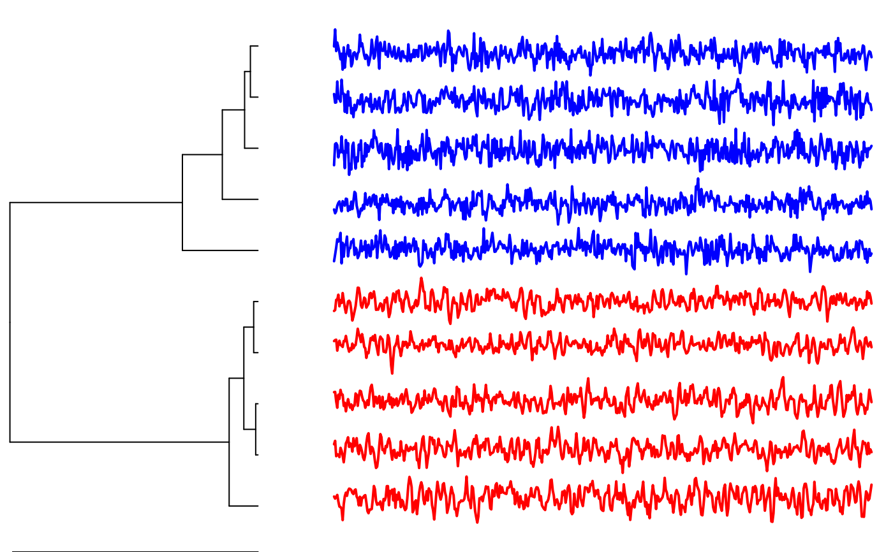

pdc-package.RdPermutation Distribution Clustering (pdc) represents a complexity-based approach to clustering time series. Clustering comprises methods that recover similarities in a dataset and represent the findings in group structures. Important applications of clustering include the creation of taxonomies, the discovery of anomalies, or the the discovery of reliably different subgroups for differential analysis or treatment. A crucial parameter in clustering is the choice of the similarity measure between objects. Permutation Distribution Clustering finds similarity in time series based on differences in their permutation distribution as a proxy for differences in their complexity. The permutation distribution is obtained by counting the frequency of distinct order patterns in an m-embedding of the original time series. An embedding of dimension m allows for m! different order patterns. The choice of the embedding dimension crucially influences the clustering result. A small embedding dimension might lead to a permutation distribution with a low representational power, while a large embedding dimension quickly leads to a large permutation distribution that cannot reliably be estimated. With the Minimum Entropy Heuristic (MinE), the embedding dimension can automatically be chosen, thus making the algorithm a parameter-free clustering approach. For clustering time-series, the similarity between two time-series is defined as the divergence between two permutation distributions. PDC is particularly apt for the analysis of psychophysiological time-series because it is efficient (the time complexity is linear in the time-series length), it is robust to drift, time-series of differing length can be compared, and it is invariant to differences in mean and variance of the time-series (choosing a normalization is not essential).
The main function of the package is pdclust, which performs a hierarchical
clustering of a set of time series based on differences in their permutation distributions.
Other clustering or dimensionality-reduction methods can easily be employed by
directly accessing the distance matrix based on the permutation distribution via pdcDist.
A heuristic for choosing the embedding dimension is provided via entropyHeuristic.
For clustering shapes, shape signatures can be traced from images with traceImage. Example data sets for shape clustering are star.shapes and complex.shapes.
Brandmaier, A. M. (2015). pdc: An R Package for Complexity-Based Clustering of Time Series. Journal of Statistical Software, 67(5), 1--23.
# generate 5 ARMA time series for the first group grp1 <- replicate(5, arima.sim(n = 500, list(ar = c(0.8897, -0.4858), ma = c(-0.2279, 0.2488)), sd = sqrt(0.1796)) ) # generate 5 ARMA time series for the second group grp2 <- replicate(5, arima.sim(n = 500, list(ar = c(-0.71, 0.18), ma = c(0.92, 0.14)), sd = sqrt(0.291)) ) # combine groups into a single dataset X <- cbind(grp1,grp2) # run clustering and color original groups each in red and blue clustering <- pdclust(X,3) plot(clustering, cols=c(rep("red",5),rep("blue",5)))